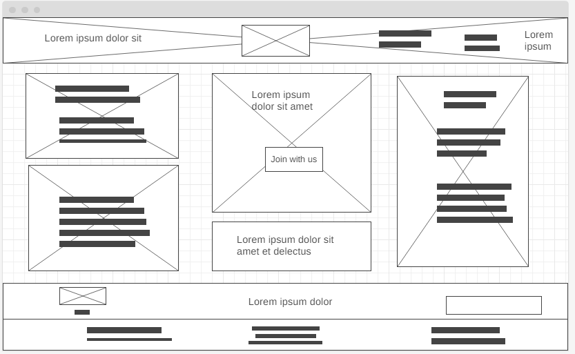

Purpose
Facilitate Business Connections
Establishing relationships with potential customers and promoters is crucial for any business. Engaging with an online community offers a two-way advantage.
Gain Customer Recommendations
Building connections with potential customers and promoters is vital. Interacting within an online community provides a mutual benefit.
Enhance Business Credibility
Consumers typically avoid purchasing from dubious sources. Customers seek quality assurance and brand recognition for the products they consume. These types of platforms offer an ideal opportunity to increase your business's visibility.
Create Networking Opportunities
As social beings, it's essential to build robust chains of support and loyalty among customers through networking. A larger network means more chances for innovation, reinvention, and bolstering your business's reputation within the community.
Wireframes
Small Screen Wireframe

Large Screen Wireframe
Typography
Heading : Railway
Paragraph: Onest
Color Scheme
These are the carefull selected elements for each color in the z Chamber of Commerce Website
| Primary | Secondary | Accent 1 | Accent 2 |
|---|---|---|---|
| #C7945F | #001400 | #C2FFC2 | #8FFF8F |
Target Audience
Tourist and potential customers
Personas
The prospective website user encompass both local and international businesses in search of information about local businesses, individuals looking for details on upcoming events, members interested in membership fee payment, and people seeking information in Quezon City.
Scenarios
A business owner, who is a newcomer to the community and wants to learn about the available resources within the chamber, will visit the "Discover" page.
Someone interested in becoming a member of the Chamber will click on the "Join" section and complete a form with their personal information.
A business owner seeking community news will navigate to the "Events" section on the homepage and look for "more information."
An entrepreneur who wishes to contribute to the community will visit the "Contact" page and provide details related to their potential contributions in the subject line.
A business owner keen on learning more about the businesses affiliated with the Chamber of Commerce will access the "Directory" section and review the listed businesses.